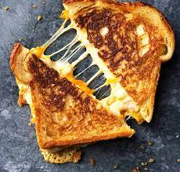

Back Home
Grilled Cheese Sandwich

Description
Everyone needs to know how to make a classic grilled cheese sandwich. Whether you're a beginner cook or an old pro, you'll come back to this top-rated grilled cheese recipe again and again.
Ingredients
- White bread
- Sliced cheese
- Butter, can be subbed with mayonnaise
How to Make Grilled Cheese Step by Step
- Butter the bread on one side and place the bread butter-side down on a hot skillet
- Top with cheese, then place another slice of bread on top butter-side up
- Cook until the bottom slice lightly browned, then flip.
- Continue cooking until the cheese is melted.